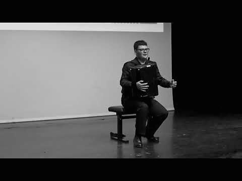

Coupe Mondiale CIA 2022, ZofingenVideo
Concorsi, finali e una serata in televisione. I video partono solo quando premi: finché non lo fai, questa pagina non parla con nessun altro server.
Concorsi, finali e una serata in televisione. I video partono solo quando premi: finché non lo fai, questa pagina non parla con nessun altro server.